Temario de Robótica Educativa
Explora los diferentes temas que tenemos en las unidades.
Unidad 1: Introducción a la Robótica
- Sobre Robótica
- Tipos de Robots y sus Mecanismos 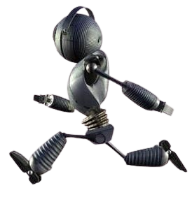
- Robots de exploración: Se usan para explorar lugares peligrosos o inaccesibles para los humanos, como océanos profundos, volcanes o zonas contaminadas. Están equipados con cámaras, sensores y otros dispositivos para recolectar datos y enviarlos a los científicos.
- Robots de fabricación: Se emplean en fábricas para producir bienes. Realizan tareas repetitivas con precisión y velocidad, como ensamblar autos, teléfonos, juguetes y más.
- Robots de asistencia: Ayudan a personas con discapacidades o limitaciones físicas. Pueden asistir en el hogar, hospitales o clínicas, y facilitar tareas como vestirse, comer o moverse.
- Robots domésticos: Se utilizan en casa para tareas como limpiar, aspirar o cortar el césped. Facilitan la vida diaria al automatizar actividades cotidianas.
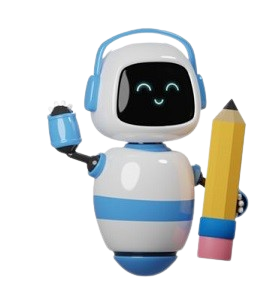La robótica es una rama de la tecnología enfocada en el diseño, construcción, programación y operación de robots, los cuales son máquinas capaces de realizar tareas automáticamente sin intervención humana directa.
Los robots pueden realizar una amplia variedad de tareas como mover objetos, hablar, tomar decisiones y recopilar información. Están compuestos por sensores, motores y computadoras, y son muy útiles en diversos campos como la medicina, la industria, el hogar y el entretenimiento.
Los motores permiten el movimiento de los robots, mientras que los sensores les ayudan a "ver" y "sentir" el entorno. Las computadoras son el “cerebro” del robot, donde se programan las instrucciones para que actúe.
La programación es fundamental, ya que determina cómo actúa el robot ante distintas situaciones. La robótica también contribuye al desarrollo de habilidades como la creatividad, la lógica y el pensamiento crítico, y está presente en muchas áreas de la vida cotidiana.
Los robots pueden tener muchas formas y tamaños, y se usan en diversas tareas. Los principales tipos de robots son:
Unidad 2: Sensores y Actuadores
- Software SCRATCH
- Scratch es un programa gratuito que permite crear historias interactivas, juegos y animaciones.
- Utiliza bloques de programación de colores que se encajan, lo que facilita el aprendizaje sin necesidad de escribir código complejo.
- Fomenta la creatividad y la imaginación, permitiendo a los niños dar vida a sus propias ideas.
- Desarrolla habilidades importantes como la resolución de problemas y el pensamiento lógico.
- La página muestra una interfaz gráfica de Scratch y anima a los usuarios a escanear un código QR para acceder al software.
- Se introduce la idea de reconocer las partes principales del programa como un primer paso para empezar a utilizarlo.
El software Scratch es una herramienta educativa y divertida para que los niños aprendan a programar.
Ideas principales:Unidad 3: Electrónica
-
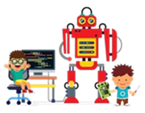
- Cables y Aislantes
- Cables: Son componentes importantes para transmitir electricidad y señales entre diferentes partes de un circuito. Generalmente son conductores de metal (como el cobre) recubiertos por un aislante.
- Aislantes: Son materiales (como plástico, goma o tela) que protegen al conductor y evitan que la electricidad se escape, garantizando la seguridad.
- Tipos de cables: Vienen en diferentes tamaños y colores para facilitar la identificación y asegurar conexiones correctas en los circuitos.
- Importancia del aislante: Es crucial para la seguridad, manteniendo la electricidad dentro del cable y previniendo cortocircuitos y descargas eléctricas. También deben soportar altas tensiones y temperaturas.
- Cuidado de los cables: Se deben manipular con cuidado para evitar que se rompan o se deshilachen, lo que podría causar cortocircuitos.
La electrónica es una rama de la ciencia y la tecnología que se dedica al estudio y control del flujo de electrones a través de distintos materiales, utilizando para ello componentes como resistencias, capacitores, diodos y transistores. En los circuitos eléctricos, los electrones pueden tener cargas positivas o negativas, y requieren una fuente de energía, como una batería, para generar el movimiento necesario.
- CIRCUITO ELECTRÓNICO 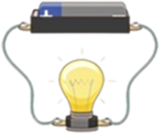
- Los interruptores: Son muy importantes porque controlan si la electricidad fluye o se detiene. Cuando apagas un interruptor, ¡la electricidad se detiene! Y cuando lo enciendes, ¡vuelve a pasar!
- La polaridad: Es como el "lado correcto" de las cosas. La electricidad tiene un lado positivo y un lado negativo. Hay que conectar todo de la forma correcta para que el circuito funcione bien. ¡Es como poner las pilas en el juguete del lado correcto!
¿Qué es un circuito electrónico?
Imagina un camino cerrado por donde viaja la electricidad. ¡Eso es un circuito electrónico!
Está hecho de varias partes, como: Una fuente de energía: Como una batería o un enchufe, que da la "gasolina" a la electricidad. Cables: Son como las carreteras por donde viaja la electricidad. Interruptores: Son como un semáforo que abre o cierra el camino para que la electricidad pase o no. Elementos consumidores: Son las cosas que usan la electricidad, como un foco que da luz o un motor que hace algo moverse.¿Para qué sirve un circuito? La electricidad viaja por este camino cerrado y hace que las cosas funcionen. Por ejemplo, enciende una bombilla para dar luz o hace girar un motor.
Unidad 4: TINKERCAD
- TINKERCAD 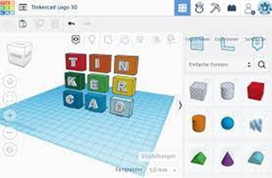Tinkercad es una herramienta online muy fácil de usar para crear diseños en 3D (como figuras de cubos y esferas) y simular circuitos electrónicos. Es muy popular en la educación y permite a los usuarios conectar componentes con cables y probar sus diseños virtualmente. Además, es colaborativa, lo que significa que varias personas pueden trabajar juntas en un mismo proyecto al mismo tiempo. Conoce más de Tinkercad
- LA SIMULACIÓN ELECTRÓNICA Con Tinkercad, se pueden diseñar circuitos electrónicos virtuales y experimentar con ellos para ver cómo funcionan. Para comenzar, seleccione una placa de circuito en Tinkercad y agregue componentes electrónicos como resistencias, diodos y LED. Luego, conecte los componentes con cables para crear un circuito completo. Una vez que el circuito esté completo, pruébelo virtualmente para asegurarse de que funciona correctamente. Tinkercad también tiene una herramienta de simulación que permite probar y solucionar problemas en sus diseños electrónicos virtuales. Si algo sale mal con el circuito, puede usar la herramienta de simulación para ver dónde está el problema y cómo solucionarlo.
- PROTOBOARD 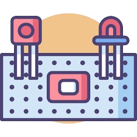El protoboard es una herramienta esencial para experimentar con circuitos electrónicos. Es una placa con agujeros interconectados que permite insertar componentes (resistencias, LEDs, etc.) y conectarlos con cables sin necesidad de soldar, facilitando el diseño y la prueba de circuitos, desde los más básicos hasta los complejos. Aunque es muy útil para la experimentación, no se usa para circuitos permanentes porque los componentes pueden soltarse con el tiempo.
BENEFICIOS
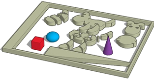Tinkercad es una herramienta excelente para construir circuitos, ofreciendo:Seguridad al permitir experimentar sin riesgo de daños.
Facilidad de uso gracias a su interfaz intuitiva de arrastrar y soltar componentes.
Retroalimentación inmediata para ver los efectos de los cambios en tiempo real.
Creatividad y experimentación al permitir probar diversos diseños de forma rápida.
Las partes del protoboard que debemos identificar son:
El canal central: se encuentra ubicado en el centro de la placa y se utiliza para la colocación de los circuitos integrados.
Los buses: los que se ubican en los dos extremos del protoboard y están representados por unas líneas de color rojo que serían los buses de voltaje o positivos y los de color azul son los buses negativos o tierra.
Las pistas: están localizadas en la parte del medio del protoboard. Estas conducen y representan según las líneas de color rosa.
Unidad 5: Robots Móviles
- Robots móviles 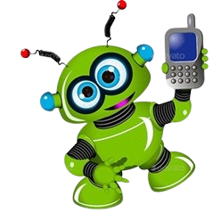 Un robot móvil es un dispositivo mecánico y electrónico que puede moverse de un lugar a otro. Puede ser controlado por un ser humano o programado para que se mueva y realice diferentes acciones de manera autónoma. Existen diferentes tipos de robots móviles, algunos se mueven en el suelo, como los robots que limpian el hogar, mientras que otros pueden volar en el aire, como los drones. Los robots móviles pueden ser programados para realizar diferentes tareas, como recoger objetos, seguir una línea o incluso jugar al fútbol. Los robots móviles se componen de diferentes partes, como sensores, actuadores, controladores y baterías. Los sensores detectan el entorno del robot, como la luz, la distancia o el sonido, mientras que los actuadores permiten al robot realizar acciones, como moverse o girar. Los controladores son los encargados de procesar la información de los sensores y enviar órdenes a los actuadores. Los robots móviles son una herramienta muy útil para enseñar a los niños sobre la programación, la electrónica y la mecánica. Les permiten experimentar, crear y aprender de una manera práctica y divertida, al mismo tiempo que les enseñan habilidades y conocimientos que serán útiles en el futuro.
- Motores 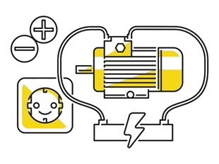 Los motores son dispositivos que convierten la energía en movimiento mecánico, lo que significa que pueden hacer que los objetos se muevan. Existen diferentes tipos de motores, pero uno de los más comunes es el:
- Almacén de Energía 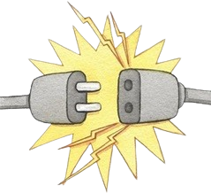El almacenamiento de energía consiste en guardar energía para usarla después, en diversas formas como electricidad o gas. Ejemplos comunes incluyen las baterías (que transforman energía química en eléctrica) y la energía hidroeléctrica (que usa el agua de presas). También existen otras formas como la energía elástica. Este proceso es fundamental para tener energía disponible cuando no se puede generar, especialmente para fuentes renovables como la solar o eólica.
Motor eléctrico Este tipo de motor funciona gracias a la interacción entre un campo magnético y una corriente eléctrica que pasa a través de una bobina. Cuando la corriente eléctrica fluye a través de la bobina, crea un campo magnético que interactúa con el campo magnético de un imán permanente. Los motores pueden ser utilizados para muchas cosas diferentes. Aprender sobre los motores puede ser una actividad divertida y educativa para todos. Permite explorar cómo funcionan las cosas y cómo se pueden crear soluciones para los problemas cotidianos.
Unidad 6: Estructura Mecánica
- Estructura Mecánica 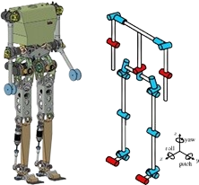La estructura mecánica es esencial en ingeniería, encargándose de diseñar y construir elementos que soporten cargas y fuerzas, como en puentes y edificios, garantizando su seguridad. Se basa en principios físicos (estática, resistencia de materiales) y considera las propiedades de cada material. Ejemplos incluyen puentes colgantes y estructuras trianguladas, que distribuyen las fuerzas eficientemente. Edificios: Con pilares y vigas que los hacen resistir su peso, viento y terremotos. Puentes: Diseñados con cables, torres y vigas para soportar vehículos y fuerzas naturales. Juguetes: Incluso un robot de juguete tiene engranajes y motores como parte de su estructura para funcionar. Se recomienda que las estructuras mecánicas usen formas triangulares en lugar de cuadradas, ya que los triángulos son más estables y resisten mejor las deformaciones al distribuir las fuerzas eficientemente. Para fortalecer una forma cuadrada, se debe añadir un soporte diagonal para crear triángulos.
- Poleas y Engranajes 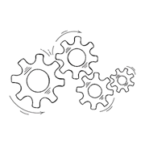Las poleas y los engranajes son elementos mecánicos cruciales que facilitan la transmisión eficiente de fuerza y movimiento. Las poleas son discos con ranuras por las que pasa una cuerda o cadena, permitiendo transmitir fuerza a distancia, como al levantar objetos pesados desde una posición inferior. Los engranajes, por otro lado, son ruedas dentadas que encajan entre sí para transmitir movimiento y fuerza, además de modificar la dirección o velocidad, un claro ejemplo es en la bicicleta donde permiten ajustar la facilidad del pedaleo y la velocidad. Ambos son componentes fundamentales en una amplia variedad de máquinas y dispositivos.
Unidad STEAM: Robótica en la Domótica
-
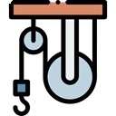La domótica integra tecnología y robótica para transformar nuestros hogares en espacios inteligentes y eficientes, actuando como un asistente personal que automatiza tareas diarias. Gracias a robots e inteligencia artificial, dispositivos como luces y termostatos pueden funcionar automáticamente, ajustándose
a nuestras necesidades. Estos robots pueden ser "cerebros inteligentes" que controlan sistemas o "brazos y piernas" que realizan acciones físicas, como cerrar persianas o interactuar vocalmente. La clave radica en la comunicación entre los robots y los dispositivos del hogar, permitiendo, por ejemplo, apagar
las luces con una simple instrucción a un altavoz inteligente.